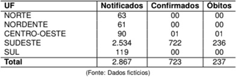
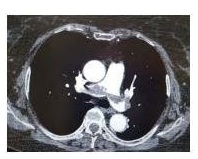

Quanto às medicações que causam hiperprolactinemia, considere os itens a seguir. I. Risperidona. II. Domperidona. III. Haloperidol. IV. Nifedipina. Assinale a alternativa correta.
Em relação à torção anexial, atribua V (verdadeiro) ou F (falso) às afirmativas a seguir. ( ) O ovário esquerdo está mais propenso a torcer em relação ao direito. ( ) Ocorre mais comumente com cistos benignos em relação aos malignos. ( ) A maioria dos casos de torção ovariana ocorre em mulheres no climatério. ( ) A gravidez está associada a um risco aumentado de torção ovariana. ( ) A ausência de uma massa anexial exclui o diagnóstico de torção. Assinale a alternativa que contém, de cima para baixo, a sequência correta.
Em relação à contracepção intrauterina, atribua V (verdadeiro) ou F (falso) às afirmativas a seguir. ( ) Uma vantagem do DIU de cobre sobre o DIU liberador de 52 mg de levonorgestrel é que pode ser utilizado como contracepção de emergência. ( ) DIU de cobre fornece proteção contra infecções do trato genital superior. ( ) Taxas de falhas com o DIUs de cobre são menores que com os DIUs liberadores de progesterona. ( ) DIUs de cobre estão associados com menstruações mais intensas, longas ou mais dolorosas, principalmente nos primeiros ciclos após a inserção. ( ) Os benefícios não contraceptivos do DIU liberador de 52 mg de levonorgestrel incluem reduções da menorragia, anemia e câncer cervical. Assinale a alternativa que contém, de cima para baixo, a sequência correta.
Em relação à vulvovaginite por cândida, atribua V (verdadeiro) ou F (falso) às afirmativas a seguir. ( ) Não há contraindicação médica à relação sexual durante o tratamento. ( ) Cândida glabrata tem alta virulência vaginal e, frequentemente, causa sintomas vaginais. ( ) Candidíase vulvovaginal recorrente é definida como quatro ou mais episódios de infecção sintomática dentro de um ano. ( ) Antifúngicos orais levam um ou dois dias a mais do que a terapia tópica para aliviar os sintomas. ( ) Tratamentos tópicos possuem mais efeitos colaterais em relação à via oral. Assinale a alternativa que contém, de cima para baixo, a sequência correta.
A transição menopáusica é um período que se inicia com a irregularidade no ciclo menstrual e se estende até 1 ano após a cessação permanente da menstruação. Com relação a esse período, considere as afirmativas a seguir. I. Na fase tardia da transição menopáusica, a mulher apresenta níveis elevados de FSH (Hormônio Fo- lículo Estimulante) e maior incidência de ciclos anovulatórios, traduzindo-se em ciclos oligomenor- reico. II. Quando há suposição de sangramento uterino anormal, o principal achado em amostras endometriais é a ação estrogênica sem oposição progestagênica. III. O tabagismo antecipa a idade da menopausa. IV. Os níveis de AMH (Hormônio Antimulleriano) elevam-se, acentuada e progressivamente, ao longo da transição menopáusica. Assinale a alternativa correta.
Em relação ao climatério, atribua V (verdadeiro) ou F (falso) às afirmativas a seguir. ( ) Os sintomas vasomotores ocorrem mais frequentemente na transição menopáusica tardia e na fase menopáusica precoce. ( ) Os fogachos são mais comuns durante o período diurno. ( ) Os sintomas relacionados à atrofia geniturinária não respondem bem à terapia estrogênica tópica vaginal. ( ) O 17- oral. ( ) O risco de doença cardiovascular aumenta após a menopausa. Assinale a alternativa que contém, de cima para baixo, a sequência correta.
Em relação à endometriose, considere as afirmativas a seguir. I. Durante a gravidez, as lesões da endometriose e os sintomas resultantes desaparecem ou melhoram. II. Endometriose torácica não pode ser identificada pela tomografia computadorizada, nem pela ressonância magnética. III. Fatores associados a um risco aumentado de endometriose incluem multiparidade, menarca tardia e menopausa precoce. IV. Fatores associados à diminuição do risco de endometriose incluem intervalos prolongados de amamentação. Assinale a alternativa correta.
Em relação ao sangramento uterino anormal (SUA), atribua V (verdadeiro) ou F (falso) às afirmativas a seguir. ( ) Sangramento intermenstrual é a manifestação clínica mais comum dos pólipos endometriais. ( ) O sangramento uterino irregular é mais comumente associado à disfunção ovulatória. ( ) As malformações arteriovenosas uterinas são causas frequentes do SUA. ( ) Os distúrbios de coagulação, geralmente se apresentam como sangramento intenso na menarca ou nas mulheres em seus últimos anos reprodutivos. ( ) A doença inflamatória pélvica (DIP) com endometrite é uma etiologia rara de SUA. Assinale a alternativa que contém, de cima para baixo, a sequência correta.
Em relação à síndrome dos ovários policísticos (SOP), atribua V (verdadeiro) ou F (falso) às afirmativas a seguir. ( ) A disfunção menstrual na SOP é caracterizada por oligomenorreia ou amenorreia. ( ) Os distúrbios menstruais têm, classicamente, um início peripuberal. ( ) A ausência de um nível sérico elevado de LH exclui o diagnóstico de SOP. ( ) As mulheres com SOP apresentam risco diminuído para abortamento espontâneo. ( ) Apneia do sono é comum em mulheres com SOP. Assinale a alternativa que contém, de cima para baixo, a sequência correta.
Em relação às indicações para a realização de ressonância nuclear magnética em mulheres com câncer de mama recentemente diagnosticado, considere as afirmativas a seguir. I. Em mulheres com doença de Paget da mama que apresentem mamografia e exame físico negativos. II. Em mulheres que estão planejando uma cirurgia reconstrutora mamária extensa. III. Em mulheres com risco muito alto de doença em mama contralateral. IV. Deve ser indicada no pré-operatório rotineiramente para a maioria das mulheres com câncer de mama em estádio inicial. Assinale a alternativa correta.
Em relação aos efeitos colaterais da ocitocina, considere os itens a seguir. I. Hipertermia. II. Hiponatremia. III. Hipotensão arterial. IV. Taquissistolia. Assinale a alternativa correta.
Assinale a alternativa que apresenta, corretamente, a droga contraindicada em uma gestante transplantada renal devido à sua teratogenicidade.
Quanto aos critérios atuais de gravidade da pré-eclâmpsia, considere os itens a seguir. I. Edema agudo de pulmão. II. Proteinúria maior que 5 g/dia. III. Restrição de crescimento fetal intrauterino. IV. Plaquetopenia < 100.000/microL. Assinale a alternativa correta.
Em relação às trombofilias hereditárias na gestação, atribua V (verdadeiro) ou F (falso) às afirmativas a seguir. ( ) As trombofilias hereditárias mais comuns são a mutação do fator V de Leiden e a mutação do gene da protrombina. ( ) O determinante mais importante do risco de tromboembolismo venoso (TEV) em mulheres com trombo lia hereditária é uma história pessoal de TEV, ou TEV em um parente de primeiro grau. ( ) Heparinas de baixo peso molecular atravessam a placenta e podem causar anticoagulação fetal. ( ) O risco de TEV pós-parto é igual ou menor que o anteparto. ( ) A trombo lia hereditária não está associada à falha em conceber ou falha de implantação nos casos de fertilização in vitro. Assinale a alternativa que contém, de cima para baixo, a sequência correta.
Em relação às mulheres com obesidade mórbida e gravidez, considere as afirmativas a seguir. I. Apresentam maior risco de anomalias congênitas. II. Apresentam maior risco de falha de indução de trabalho de parto. III. Apresentam risco aumentado de depressão pós-parto. IV. O risco de prematuridade é igual ao de mulheres com índice de massa corpórea (IMC) normal. Assinale a alternativa correta.
Em relação ao abortamento espontâneo, considere as afirmativas a seguir. I. O repouso no leito tem benefício comprovado nos casos de ameaças de abortamento. II. Não há redução do risco de abortamento com a suplementação aleatória de progesterona vaginal. III. A conduta expectante é uma opção terapêutica para as pacientes com abortamento retido ou incompleto. IV. Estão liberadas a engravidar novamente antes de 3 meses decorridos do abortamento anterior. Assinale a alternativa correta.
Em relação à avaliação da vitalidade fetal pela cardiotocografia, considere as afirmativas a seguir. I. A febre materna pode aumentar a frequência cardíaca basal fetal e diminuir a variabilidade. II. O uso de opioides e de sulfato de magnésio diminuem a variabilidade. III. O padrão sinusoidal é um componente da categoria III. IV. O sono fetal está associado com a variabilidade aumentada e a frequência reduzida das acelerações. Assinale a alternativa correta.
Em relação aos testes utilizados nos casos duvidosos de ruptura prematura das membranas amnióticas, considere os itens a seguir. I. Pesquisa de alfa microglobulina-1 placentária; II. Pesquisa de proteina placentária 12 (IGFPB-1); III. Teste de Kleihauer-Betke; IV. Teste de Winner; Assinale a alternativa correta.
Em relação à avaliação de vitalidade fetal, considerando-se a relação cerebroplacentária pelo doppler obstétrico, atribua V (verdadeiro) ou F (falso) às afirmativas a seguir. ( ) Uma relação baixa está associada com desfechos obstétricos desfavoráveis em fetos pequenos para a idade gestacional (PIG) com suspeita de restrição de crescimento fetal tardia. ( ) Uma relação elevada sugere que o sangue fetal está sendo progressivamente direcionado ao cérebro fetal. ( ) É calculada pela divisão do índice de pulsatilidade da artéria umbilical sobre o índice de pulsatilidade da artéria cerebral média. ( ) A relação menor que 1 reflete comprometimento fetal. ( ) Uma relação baixa sugere uma resistência placentária aumentada. Assinale a alternativa que contém, de cima para baixo, a sequência correta.
Quanto aos fatores de risco para a retenção placentária, considere os itens a seguir. I. Idade materna menor que 30 anos. II. Inserção velamentosa do cordão umbilical. III. Uso de metilergometrina. IV. Úteros de configuração anômala. Assinale a alternativa correta.
Sobre o Contrato Organizativo de Ação Pública (COAP) e a regionalização do SUS, assinale a alternativa correta.
A cobertura populacional estimada pelas equipes básicas de saúde em Londrina, no ano de 2010, foi de 57%, enquanto na Espanha, no mesmo período, foi de 100%. As internações sensíveis por atenção básica (ISAB) no município de Londrina, nesse período, foi de 22%, enquanto na Espanha foi de 5%. Assinale a alternativa que apresenta, corretamente, a melhor explicação para a situação apresentada.
Sobre a Atenção Primária à Saúde, pode-se a rmar que ela deve ter alto grau de descentralização e o seu desenvolvimento deve ser próximo da comunidade. Em relação às diretrizes da Atenção Primária à Saúde, assinale a alternativa correta.
O conceito de Vigilância em Saúde refere-se a um grupo de atividades desenvolvidas no âmbito do Sis- tema Único de Saúde (SUS), cujo objetivo é observar e analisar permanentemente a situação de saúde da população, articulando-se em um conjunto de ações destinadas a controlar determinados riscos e danos à saúde de populações que vivem em territórios específicos. Sobre o conceito de Vigilância em Saúde, considere as afirmativas a seguir. I. Vigilância em saúde é uma intervenção sobre problemas de saúde, que requerem atenção e acompa- nhamento contínuos; adoção do conceito de risco; articulação entre ações promocionais, preventi- vas, curativas e reabilitadoras. II. Apoiada no conceito positivo do processo saúde-enfermidade, a vigilância em saúde desloca radical- mente o olhar sobre o objeto da saúde pública – da doença para o modo de vida (as condições e os estilos de vida) das pessoas. III. O sistema de Vigilância Epidemiológica, por sua importância para o planejamento das ações de saúde, é de responsabilidade exclusiva do Ministério de Saúde. IV. Vigilância em saúde é a nova denominação dada à vigilância sanitária. Assinale a alternativa correta.
O sistema de internação domiciliar foi implantado pioneiramente em Londrina, no ano de 1997 (o mais antigo do Brasil), com capacidade para atender o equivalente a 120 leitos por dia (pacientes internados em suas casas) com o nome de Serviço de Internação Domiciliar (SID). Em 2002, esse tipo de atendimento foi ampliado para o Paraná e todo o país, com o nome de Melhor em Casa. Em relação aos serviços de atenção domiciliar, assinale a alternativa correta.
Sobre a comunicação dos acidentes de trabalho (CAT), assinale a alternativa correta.
Um médico, durante um exame admissional de aptidão física e/ou mental, descobre que o candidato à vaga é portador do vírus da imunode ciência humana (HIV). Com base no Código de Ética Médica, assinale a alternativa que apresenta, corretamente, a conduta do médico nesse caso.
Quanto às ações recomendadas no desenvolvimento da Atenção Integral à Saúde dos Trabalhadores, considere as afirmativas a seguir. I. Desenvolvimento de estudos e pesquisas relacionados com a saúde dos trabalhadores. II. Fortalecimento da vigilância de ambientes, processos e agravos relacionados ao trabalho. III. Promoção de ambientes e processos de trabalho saudáveis. IV. Participação da comunidade na assistência à saúde dos trabalhadores. Assinale a alternativa correta.
A perícia médica é uma atribuição privativa do médico, desde que investido em função que assegure a competência legal do ato pro ssional. O exame médico-pericial visa definir o nexo de causalidade, nesse sentido, considere as a rmativas a seguir. I. Lesão e a morte. II. Doença e sequela temporária ou permanente. III. Acidente e o exercício da atividade laboral. IV. Incapacidade ou invalidez apenas mental. Assinale a alternativa correta.
Constituição Federal CF1988 Em relação ao direito à saúde no Brasil, considere as afirmativas a seguir. I. Um cidadão saudável é aquele que vive sem doenças físicas ou mentais. O meio ambiente e o território não in uenciam na sua saúde, mas determinam a qualidade de vida dos indivíduos. II. Saúde e educação são, paradoxalmente, direitos sociais individuais e que beneficiam a comunidade como um todo. III. O direito de receber remédio e tratamento gratuito pelo SUS está assegurado pelo Art. 196 da Carta Magna (saúde é direito de todos e dever do Estado). IV. O processo saúde-doença é um processo social caracterizado pelas relações dos homens com a natureza e com outros homens em um determinado espaço geográfico e em um determinado tempo histórico. Assinale a alternativa correta.
Sobre as competências do Sistema Único de Saúde (SUS) no Brasil, considere as afirmativas a seguir. I. Execução de ações de assistência terapêutica parcial. II. Execução de ações de vigilância sanitária. III. Execução de ações de vigilância epidemiológica. IV. Execução de ações de saúde do trabalhador. Assinale a alternativa correta.
Um estudo investigou a acurácia do exame de ultrassonogra a abdominal no diagnóstico de apendicite e encontrou os resultados a seguir. Assinale a alternativa que apresenta, corretamente, a acurácia do exame de ultrassonogra a para o diagnóstico de apendicite aguda.
Analise, a seguir, os dados de saúde de uma população, no ano de 2018. Assinale a alternativa que apresenta, corretamente, o cálculo do coeficiente de mortalidade infantil dessa comunidade.
Paciente feminina, 65 anos de idade, com queixa de cefaleia intensa e súbita, foi levada pelos familiares ao hospital, onde faleceu 4 horas após o início do quadro, com diagnóstico de acidente vascular encefálico hemorrágico. Apresentava obesidade mórbida desde 25 anos e hipertensão arterial desde 40 anos, acidente vascular encefálico com recuperação parcial há 8 meses. Há 1 ano, foi submetida a pan-histerectomia, seguida de quimio e radioterapia, por adenocarcinoma do colo uterino. Assinale a alternativa que apresenta, corretamente, a opção mais adequada para o preenchimento das “causas da morte” na Declaração de Óbito.
O Ministério da Saúde divulgou a situação do sarampo no país, no período de monitoramento de 1º de janeiro de 2019 a 30 de junho de 2019. Na tabela a seguir, é apresentada a distribuição dos casos por regiões (UF) do Brasil (Dados ctícios). Com base nos dados dessa tabela, assinale a alternativa que apresenta, corretamente, a taxa de letalidade para o sarampo nesse período.

Em um ensaio clínico para testar determinada vacina contra febre amarela, 460 voluntários adultos foram alocados aleatoriamente aos grupos vacinados (receberam a vacina sendo testada) e grupos controles (receberam um placebo). Dos 240 participantes que receberam a vacina, 20 contraíram febre amarela; entre os que não receberam, 80 desenvolveram a doença. Assinale a alternativa que apresenta, correta e respectivamente, a incidência de febre amarela entre os indivíduos do grupo que utilizou a vacina e de grupo controle.
Assinale a alternativa que apresenta, corretamente, os comportamentos dos indicadores de saúde do Brasil que contribuem para a constatação de que o país está passando por um processo de transição epidemiológica e demográfica.
Um médico clínico geral examinou uma população de 1.000 crianças em uma determinada escola, para diagnosticar doenças do coração. Assuma que a prevalência de doenças do coração nessa população em idade escolar é de 5%, a sensibilidade do exame do médico que avaliou as crianças na escola é de 80% e sua especi cidade de 80%. Todas as crianças classificadas como “positivas” pelo médico da escola foram encaminhadas para um cardiologista para um segundo exame. Assinale a alternativa que apresenta, corretamente, a quantidade de crianças que foram classificadas como “positivas verdadeiras”.
Com o objetivo de avaliar o efeito do consumo de tomate sobre níveis de HDL colesterol (lipoproteína de alta densidade), foi realizado um estudo no qual o per l lipídico de 432 indivíduos foi determinado. Todos os indivíduos com HDL colesterol baixo e com triglicerídeos normais foram incluídos no estudo e acompanhados por 6 meses. Esses indivíduos foram alocados aleatoriamente para receber 300 g de pepino (Grupo 01) ou 2 tomates (Grupo 02) por dia durante 4 semanas. Assinale a alternativa que apresenta, corretamente, o tipo de delineamento utilizado nesse estudo.
O médico do centro de saúde é responsável pelo acompanhamento de 120 crianças em uma comunidade. Dessas, 100 crianças estão matriculadas em uma creche e 20 cam em casa com suas mães. Das crianças que frequentam a creche, 50 tiveram resfriado comum, enquanto 8 crianças que cavam em suas casas tinham a doença, em um nal de semana de julho. Assinale a alternativa que apresenta, correta e respectivamente, a prevalência de resfriado entre as crianças que frequentam a creche e as que ficam em casa.
Leia o texto a seguir. Brumadinho pode ter surto de doenças infecciosas, diz Fiocruz Estudo publicado nesta terça (5) mostra que há risco de aumento de doenças como dengue e febre amarela já nas próximas semanas. (Disponível infecciosas-diz fiocruz.ghtml>. Acesso em: 16 set. 2019.) Sobre dengue e febre amarela, considere as afirmativas a seguir. I. Em casos graves de febre amarela, ocorre hepatite fulminante, com elevação de transaminases com valores > 1.000 U/L, e bilirrubinas elevadas, as custas de indireta, evidenciando extensa lesão hepática. II. Em ambas as doenças, seu agente etiológico é transmitido por artrópodes, os mosquitos que as transmitem podem ser o Aedes aegypti e o Haemagogus e caracterizam-se porque a grande maioria dos casos é assintomática. III. A presença do choque hemorrágico da dengue se justi ca pelo aumento da permeabilidade vascular, seguido de extravasamento de plasma e falência circulatória IV. A vacinação é a medida mais importante para a prevenção da febre amarela. Assinale a alternativa correta.
Revisar: possível letra faltando em enunciado
Em relação à pancreatite crônica, considere as afirmativas a seguir. I. O tabagismo tem um efeito sinérgico ao álcool em sua etiologia. II. Níveis séricos de IgG4 estão elevados na pancreatite autoimune. III. Polimorfismos genéticos aumentam o risco de progressão da doença. IV. Esteatorreia ocorre nas fases iniciais por insuficiência exócrina. Assinale a alternativa correta.
Os pacientes com cirrose hepática podem ter seu prognóstico considerado por meio de escores de gravidade como o MELD (Model for end stage Liver Desease). Assinale a alternativa que apresenta, corretamente, todos os parâmetros considerados para essa medida.
Paciente masculino, 55 anos de idade, diabético, queixa-se de dor na região do ombro direito há 3 meses. Não consegue mais realizar atividades domésticas, como passar roupas ou trocar uma lâmpada no teto. A dor é contínua, inclusive durante a noite. O médico suspeita de capsulite adesiva do ombro. Quanto ao achado no exame físico mais característico nesta doença, assinale a alternativa correta.
Paciente feminina, 19 anos de idade, procura atendimento na UBS referindo o aparecimento, há 2 semanas, de uma mancha em braço esquerdo, não pruriginosa e que, há 2 dias, houve um aumento no número das lesões. Nega febre, uso de medicamentos, contato com animais, ou quadro semelhante, em familiares e pessoas próximas. Ao exame, apresenta uma mácula eritemato-descamativa de 8 cm de diâmetro em membro superior esquerdo e múltiplas lesões ovalares menores, eritemato-descamativas, disseminadas em tronco e raiz dos membros. A face estava poupada. Assinale a alternativa que apresenta, corretamente, o diagnóstico.
Em relação à neuropatia diabética, atribua V (verdadeiro) ou F (falso) às afirmativas a seguir. ( ) Afeta mais as fibras grossas dos nervos periféricos. ( ) Geralmente, produz sintomas sensitivos e motores, na sua apresentação clínica mais comum. ( ) Pode afetar a marcha. ( ) Há predomínio nos membros inferiores. ( ) Há perda precoce da propriocepcão na neuropatia diabética. Assinale a alternativa que contém, de cima para baixo, a sequência correta.
Em relação à narcolepsia-cataplexia, assinale a alternativa correta.
Paciente feminina, 55 anos de idade, é atendida por um quadro de inquietação motora com grande sensação de desconforto subjetivo, há duas semanas. Ela refere discreto alívio ao se movimentar e é incapaz de permanecer sentada ou parada durante a consulta. A paciente apresenta história de esquizofrenia e iniciou uso de risperidona 4 mg/dia, há três semanas. Apresenta dados vitais inalterados. Ao exame, apresenta-se consciente, orientada, lúcida e vigil, com diversos movimentos frequentes e periódicos de membros superiores e inferiores bilateralmente (balança pernas, mãos, esfrega-se, levanta e abaixa a perna, levanta-se e anda de um lado a outro). Ao ser solicitada que tente interromper os movimentos, consegue fazê-lo por alguns minutos. Não há hipertonia nem espasticidade. Com base nesse caso, assinale a alternativa que apresenta, corretamente, o provável diagnóstico.
Um motorista, 35 anos de idade, procura auxílio psiquiátrico devido a sua di culdade em lidar com a raiva. Conta que, em várias situações, ca agressivo verbalmente com passageiros e colegas de trabalho, já perdeu várias namoradas por ter sido excessivamente grosseiro durante discussões e em uma ocasião cou tão descontrolado que bateu seu carro propositalmente após levar uma “fechada”. Tais episódios ocorreram na ausência de eventos estressores evidentes ou graves e, apesar de haver histórico de uso abusivo de álcool, os rompantes agressivos acontecem em períodos de sobriedade. Entre os episódios de raiva, é uma pessoa calma, gentil e amável com seus pares. Tem muitos amigos e uma vida social ativa. Arrepende-se amargamente após os episódios de descontrole, que duram alguns minutos. Quanto ao provável diagnóstico, assinale a alternativa correta.
Sobre a abordagem inicial e a abordagem especí ca na doença ulcerosa péptica na emergência, assinale a alternativa correta.
Revisar: possível letra faltando em enunciado
Em relação ao tromboembolismo pulmonar (TEP), assinale a alternativa correta.
Paciente, 68 anos de idade, em tratamento de insu ciência cardíaca com fraco de ejeção reduzida, porém sem melhora clínica, apresenta ao ecocardiograma, FE 29%, hipertro a excêntrica com hipocinesia difusa. No momento, sintomático, classe funcional III, per l A, estádio C e ECG com BRE (QRS > 150 ms), sinusal e FC 60 bpm, em tratamento clínico otimizado há 6 meses com ramipril 10 mg, uma vez ao dia, carvedilol em dose plena, aldactone 25 mg/dia e furosemida 80 mg pela manhã. Seguindo a última Diretriz Brasileira de Manejo da Insu ciência Cardíaca publicada, em 2018, assinale a alternativa correta.
Segundo o livro-texto do curso ACLs (Advanced Cardiology Life Support), assinale a alternativa correta.
Paciente masculino, 55 anos de idade, altura 1,70 m, peso real 80 kg, peso predito 66 kg, sem comorbidades, apresentou pneumonia comunitária, evoluiu com sepse e insu ciência respiratória com necessidade de intubação traqueal e ventilação mecânica. Sobre a regulagem inicial do ventilador mecânico invasivo para o paciente, assinale a alternativa correta.
Paciente procura atendimento médico por nefrolitíase de repetição. Nega uso de qualquer medicação, bem como qualquer doença de base. Durante a investigação, os exames laboratoriais demonstraram PTH sérico discretamente elevado, com concentrações plasmáticas de cálcio e fósforo normais, creatinina 0,9 mg/dL e vitamina D 34 ng/mL. Com base nesses achados, assinale a alternativa que apresenta, corretamente, o diagnóstico mais provável.
Em relação às endocrinopatias associadas à infecção crônica pelo vírus da hepatite C (VHC), considere as a rmativas a seguir. I. A infecção crônica pelo VHC acarreta aumento da resistência à insulina e do risco de diabetes mellitus tipo 2. II. A presença de diabetes mellitus tipo 2, nos pacientes portadores de hepatite pelo vírus C, aumenta o risco de evolução para cirrose hepática. III. A infecção crônica pelo VHC está associada ao aumento do risco de hipotireoidismo por brose tireoidiana de etiologia não imunológica. IV. Não há evidências de aumento do risco de carcinoma papilífero na doença tireoidiana relacionada à infecção crônica pelo VHC. Assinale a alternativa correta.
Considere os valores normais de referência para os parâmetros de uma gasometria arterial a seguir. pH 7,35 – 7,45 pCO₂ 35 – 45 mmHg HCO₃ 23 – 26 mEq/L; Sobre os distúrbios ácido-básicos, relacione as gasometrias com o distúrbio predominante. (I) pH 7,30 – pCO₂ 54 mmHg – HCO₃ - 28 mEq/L; (II) pH 7,26 – pCO₂ 48 mmHg – HCO₃ 18 mEq/L; (III) pH 7,47 – pCO₂ 45 mmHg – HCO₃ 29 mEq/L; (IV) pH 7,52 – pCO₂ 28 mmHg – HCO₃ 28 mEq/L; (V) pH 7,25 – pCO₂ 28 mmHg – HCO₃ 14 mEq/L; (A) Alcalose mista; (B) Acidose respiratória; (C) Alcalose metabólica; (D) Acidose metabólica; (E) Acidose mista; Assinale a alternativa que contém a associação correta.
Paciente masculino, 75 anos de idade, admitido em pronto atendimento do hospital universitário após ser encaminhado de outro serviço por sepse de foco pulmonar. Tem antecedente patológico de doença renal crônica não dialítica, sendo sua creatinina sérica (Cr) basal de 1,8 mg/dL. Na admissão hospitalar, a Cr estava em 2,4 mg/dL e, no segundo dia de internação, 3,0 mg/dL. O paciente está com sonda vesical de demora desde a admissão e tem débito urinário preservado. Sobre esse caso de injúria renal aguda (IRA), assinale a alternativa correta.
Paciente masculino, 65 anos de idade, comparece ao pronto-socorro com quadro de dor torácica e dispneia há 1 dia, sem febre e sem comorbidades. Na chegada, o exame físico taquipneico apresenta PA 140/100 mmHg, saturação 90% em ar ambiente, FC 115 bpm, bulhas rítmicas e ausculta sem ruídos adventícios. Foi realizado o exame a seguir. Sobre esse caso, considere as afirmativas a seguir. I. O achado mais comum no eletrocardiograma é o padrão de taquicardia sinusal. II. Por se tratar de embolia maciça, a trombólise deve ser iniciada em até 6 horas. III. O exame de D-dímero é o próximo passo no manejo desse paciente para avaliar a gravidade e o prognóstico. IV. Iniciar o tratamento com anticoagulantes e manter por, no mínimo, 3 meses. Assinale a alternativa correta.

Paciente masculino, 63 anos de idade, comparece para retorno, apresentando quadro de dispneia progressiva no último ano, com piora no último mês, quando foi ao plantão e foi medicado com antibiótico e corticoide, mas não precisou ser internado. Refere necessidade de parar para respirar quando caminha no plano. Ex-tabagista com uma carga de 40 anos/maço, sem outras doenças prévias. Traz prova de função pulmonar (espirometria) a seguir. Sobre esse caso, considere as afirmativas a seguir. I. A resposta ao broncodilatador, vista no exame, afasta o diagnóstico de DPOC, e o diagnóstico é de asma. II. O tratamento com budesonida deve ser a primeira opção por se tratar de doença grave. III. A prova de função pulmonar mostra um distúrbio obstrutivo, confirmando DPOC. IV. O paciente pode ser classificado como DPOC GOLD 2 B, e o tratamento começa com o uso de broncodilatadores, como beta agonistas (LABA) ou antimuscarínicos (LAMA). Assinale a alternativa correta.
Quanto aos fatores de risco para trombose venosa profunda, considere os itens a seguir. I. Varizes. II. Cirurgia ortopédica. III. Imobilização. IV. Hipertensão. Assinale a alternativa correta.
Paciente feminina, 35 anos de idade, secretária, faz uso de anticoncepcional oral, é tabagista e obesa. Ao sair do trabalho, procurou imediatamente o pronto-socorro por apresentar dor súbita na panturrilha esquerda há 2 horas. A paciente negou qualquer trauma ou quadro clínico semelhante anterior. O exame clínico evidenciou edema, cianose distal e dor à palpação e a dorso exão do pé ipsilateral, os pulsos eram palpáveis. Assinale a alternativa que apresenta, corretamente, a hipótese diagnóstica mais provável para esse caso.
Relativo ao tratamento para o câncer de pulmão “não pequenas células”, no estádio 3A, assinale a alter- nativa que apresenta, corretamente, a sequência de condutas a ser aplicada.
A respeito da atresia de esôfago, considere as afirmativas a seguir. I. A suspeita diagnóstica ocorre no pré-natal e é confirmada na sala de parto. II. As complicações pós- operatórias mais frequentes são deiscência da anastomose, estenose da anastomose e re uxo gastroesofágico (RGE). III. As anomalias associadas mais frequentes são cardíacas, renais e neurológicas. IV. O tipo mais comum é sem fístula traqueoesofágica. Assinale a alternativa correta.
Sobre a invaginação intestinal, atribua V (verdadeiro) ou F (falso) às afirmativas a seguir. ( ) É a causa mais frequente de abdome agudo em crianças acima de 3 anos de idade. ( ) A ultrassonografia é o método diagnóstico de eleição. ( ) A forma ileocólica é mais comum que a forma ileocecólica. ( ) A causa mais comum da invaginação é idiopática. ( ) Tempo de história maior que 2 dias e idade acima de 5 anos não contraindicam a redução hidrostática. Assinale a alternativa que contém, de cima para baixo, a sequência correta.
Em relação à estenose hipertrófica de piloro (EHP), assinale a alternativa correta.
Paciente masculino, 32 anos de idade, vítima de colisão moto x auto, há 20 minutos, é trazido pelo SIATE (Ambulância Básica e sem Médico Socorrista) ao PSC do HU-UEL, com colar cervical e em prancha rígida. Na entrada, apresenta-se com múltiplas fraturas em face e com grande quantidade de sangue em cavidade oral e nasal; murmúrio vesicular abolido e submacicez em hemitórax direito (HTX D), FR 30 irpm e satura- ção de O₂ 78%; PA 70/40 mmHg e pulso 150 bpm; Glasgow variando de 8-10; com múltiplas escoriações, presença de fratura do 2° e 3° arcos costais em HTX D, sem sinais de trauma abdominal e sem fratura pélvica. Sobre a conduta adequada da abordagem inicial ao politraumatizado, assinale a alternativa que apresenta, corretamente, a melhor sequência a ser aplicada.
Paciente masculino, 68 anos de idade, é encaminhado ao PSC do HU-UEL via SAMU do Hospital da Zona Norte, com história de dor e distensão abdominal, há 2 dias, associadas a náuseas e vômitos, há 1 dia, com parada de eliminação de atos e fezes, há 6 horas com vômitos fecaloides. Refere perda ponderal de 4 kg nos últimos 30 dias. No exame físico, apresenta-se com regular estado geral, emagrecido, desi- dratado (3+/4), pulso de 102 bpm, PA 100/60 mmHg, FR 22 irpm, abdome globoso, distendido, timpânico difusamente e com ruídos hidroaéreos diminuídos, massa palpável em anco esquerdo e com aspecto de “luta” e toque com ampola retal vazia. Assinale a alternativa que apresenta, corretamente, o diagnóstico mais provável, sua causa e a melhor conduta terapêutica nesse caso.
Um paciente com pielonefrite aguda em tratamento, com febre persistente e dor no anco insistente durante 24 horas necessita de
Assinale a alternativa que apresenta, corretamente, a causa mais comum de hematúria macroscópica em um paciente de 50 anos de idade.
Paciente masculino, 78 anos de idade, é atendido em unidade de pronto-socorro com quadro de distensão abdominal e parada de eliminação de gazes e fezes. O exame físico do abdome mostra distensão abdominal, sem sinais de peritonite. Os raios X simples de abdome mostrou distensão colônica sugestiva de volvo de sigmoide. Assinale a alternativa que apresenta, corretamente, a melhor conduta terapêutica inicial nesse caso.
Assinale a alternativa que apresenta, corretamente, o marcador tumoral que está mais relacionado ao carcinoma hepatocelular.
Assinale a alternativa que apresenta, corretamente, em qual patologia o sinal de Jobert pode estar presente.
Paciente masculino, 28 anos, vítima de acidente automobilístico chega à sala de emergência apresentando taquicardia, dispneia, hipotensão arterial, cianose, estase de jugular. Ao exame físico, as vias aéreas estão pérvias, o tórax apresenta ausência de murmúrio vesicular à esquerda e timpanismo à percussão. Assinale a alternativa que apresenta, corretamente, a primeira conduta de forma imediata a ser realizada nesse caso.
Sobre hérnias da parede abdominal, atribua V (verdadeiro) ou F (falso) às afirmativas a seguir. ( ) As hérnias umbilicais congênitas podem se fechar espontaneamente por volta dos 2 anos de idade. ( ) Na hérnia femoral, o saco herniário está localizado inferiormente ao ligamento inguinal. ( ) Na hérnia inguinal direta, o saco herniário está medialmente aos vasos epigástricos inferiores. ( ) A maioria das hérnias de Spiegel são de colo largo, sendo encarceramento de ocorrência rara. ( ) Na hérnia lombar, o paciente apresenta dor na face medial da coxa por compressão do nervo obturador. Assinale a alternativa que contém, de cima para baixo, a sequência correta.
Pacientes com tumores de andar superior de abdome, principalmente no câncer gástrico, podem apresentar linfoadenomegalia supraclavicular esquerda. Assinale a alternativa que apresenta, corretamente, a denominação desse sinal.
Sobre a doença de Buschke–Löwenstein, assinale a alternativa correta.
Paciente feminina, 64 anos de idade, internada na manhã da cirurgia, totalmente assintomática à admissão hospitalar, em pós-operatório imediato de gastrectomia total + anastomose esofagojejunal por câncer gástrico, evoluiu na unidade de terapia intensiva com queda de saturação de oxigênio, taquipneia e um pico febril de 38 apresenta, corretamente, o diagnóstico mais provável nesse caso.
Sobre a pancreatite aguda, considere as afirmativas a seguir. I. A doença litiásica biliar e o consumo de álcool são responsáveis por 80-90% dos casos de pancreatite aguda. II. O diagnóstico da pancreatite aguda é eminentemente clínico e laboratorial, uma vez que o pâncreas pode mostrar-se normal à tomografia computadorizada de abdome (Balthazar A). III. Pacientes com pancreatite aguda grave podem apresentar hematomas e equimoses na região periumbilical (sinal de Cullen), nos flancos abdominais (sinal de Grey-Turner) ou nas regiões inguinais (sinal de Fox). IV. Pacientes com pancreatite aguda grave devem receber nutrição parenteral total já no início do quadro, mantendo jejum do trato gastrintestinal. Assinale a alternativa correta.
Paciente feminina, 60 anos de idade, internada em unidade de terapia intensiva por sepse de foco uriná- rio, evoluiu com choque séptico e necessidade de noradrenalina endovenosa. Foi introduzido um cateter venoso central na veia jugular direita, realizados raios X de tórax de controle e, na sequência, a paciente apresentou piora súbita do choque, sem resposta a doses crescentes do vasopressor, além de dessatu- ração e assincronia ventilatória. Aos raios X, evidenciados hipertransparência do pulmão direito e desvio de mediastino e traqueia para a esquerda. Assinale a alternativa que apresenta, corretamente, a principal hipótese diagnóstica e a conduta imediata nesse caso.
Em relação à anemia ferropriva na infância, considere as afirmativas a seguir. I. Em lactente nascido a termo, com peso adequado e aleitamento materno exclusivo, a suplementação de ferro deve se iniciar aos 12 meses e ir até os 24 meses de vida. II. A carência de ferro na infância pode ser deletéria para o seu desenvolvimento cognitivo, inclusive predispondo a cáries. III. Os sais ferrosos são e cazes na correção da hemoglobina e na reposição dos estoques de ferro, apresentam baixo custo e rápida absorção (difusão ativa e passiva, no duodeno), porém apresentam mais reações adversas quando comparadas a outras apresentações de ferro. IV. Dentre as vantagens importantes do uso do sal ferroso no tratamento da anemia ferropriva estão a maior quantidade de ferro absorvida que pode ultrapassar a capacidade de saturação da transferrina, levando à presença de ferro não ligado à transferrina (NTBI, non-transferrin- bound iron) e, sobretudo, do ferro livre plasmático (LPI, labile plasma iron). Assinale a alternativa correta.
Enquanto aguardava a administração de vacina em uma Unidade Básica de Saúde (UBS), uma criança de 4 anos de idade coloca a mão dentro de recipiente para acondicionar objetos perfurocortantes e sofre acidente com agulha. Houve trans xação do dedo da criança e havia sangue visível na luz da agulha por ter sido usada recentemente (paciente fonte desconhecido). Criança foi atendida de imediato pelo pediatra de plantão na UBS. Em relação à pro laxia para a transmissão do vírus HIV neste caso, atribua V (verdadeiro) ou F (falso) às afirmativas a seguir. ( ) A terapia antirretroviral (TARV) indicada é a associação de zidovudina (AZT), lamivudina (3TC) e raltegravir (RAL). ( ) A TARV deve ser iniciada até 96 horas do acidente e deve ser mantida por 14 dias. ( ) É desnecessária a realização de testagem de HIV na criança no dia do acidente. ( ) A coleta seriada de sorologias para HIV na criança deve ser realizada posteriormente com 30 e com 90 dias do dia do acidente. ( ) Além da coleta seriadas das sorologias para HIV, outros objetivos do acompanhamento ambulatorial são avaliar a adesão e a toxicidade da TARV e fazer avaliação laboratorial. Assinale a alternativa que contém, de cima para baixo, a sequência correta.
Sobre as complicações do sarampo, considere as afirmações a seguir. I. A panencefalite esclerosante subaguda é mais frequente que a encefalite aguda. II. Cerca de 10% das crianças com sarampo desenvolverão otite média aguda. III. Gestantes com sarampo podem apresentar aborto espontâneo, parto prematuro, ter RN com baixo peso ao nascer e evoluir para óbito. IV. A causa mais comum de morte em crianças de baixa idade é a pneumonia. Assinale a alternativa correta.
Relacione as idades, na coluna da esquerda, com os marcos de desenvolvimento motor esperados para a criança, na coluna da direita. (I) 2 meses. (II) 4 meses. (III) 9 meses. (IV) 1 ano. (V) 2 anos. (A) Rola de supino para a prona. (B) Anda sozinha. (C) Quando do nada, levanta cabeça e peito. (D) Usa brinquedo com pedal. (E) Senta-se sozinha. Assinale a alternativa que contém a associação correta.
Bebê feminina, nascida a termo com 3 kg, em boas condições de vitalidade, recebe alta da maternidade em aleitamento materno. Retorna 15 dias depois, pesando 3,4 kg em boas condições, com pele amarelada, fezes esbranquiçadas e diurese escura. Foram colhidos diversos exames de sangue e observado aumento de bilirrubinas às custas de bilirrubina direta, além de TGO e TGP pouco aumentadas. Assinale a alternativa que apresenta, corretamente, a hipótese diagnóstica mais provável.
Em relação à obesidade exógena na criança, assinale a alternativa correta.
Quanto aos genes e fatores de transcrição relacionados ao crescimento, no que se refere ao gene SHOX, assinale a alternativa correta.
Prematuro, 24 semanas de gestação, nasce de parto cesárea de urgência devido a descolamento prematuro da placenta com necessidade de reanimação na sala de parto, Apgar 0/5 no primeiro e quinto minuto, respectivamente. Peso de nascimento: 550 gramas. Desenvolve Síndrome do Desconforto Respiratório (Membrana hialina), com necessidade de reposição de surfactante pulmonar exógeno. No terceiro dia de vida, ocorre piora do desconforto respiratório, com necessidade de aumento dos parâmetros de ventilação pulmonar mecânica e apresenta hemorragia pulmonar maciça e vai a óbito. Em relação à causa básica do óbito deste recém-nascido, assinale a alternativa correta.
Um médico é chamado para avaliar um recém-nascido de 38 semanas de gestação, com 72 horas de vida, que está em alojamento conjunto, nasceu de parto normal de uma primigesta que não apresentou intercorrências na gestação, Apgar 9/10 no primeiro e quinto minutos, respectivamente, com peso de 3.250 gramas, em aleitamento materno exclusivo. A criança apresenta icterícia Zona II de Kramer com o restante do exame físico normal. A tipagem sanguínea da mãe é A rH positivo e o recém-nascido é O rH negativo. A dosagem de bilirrubina é 12 mg/dL, sendo a fração indireta de 11,8 mg/dL, normograma de Bhutani entre percentil 40 e 75. Assinale a alternativa que apresenta, corretamente, o diagnóstico e a conduta para esse recém-nascido.
As malformações cardíacas são o grupo de doenças congênitas mais frequentes, decorrentes de alterações na embriogênese cardíaca. Após o nascimento, há um período de transição neonatal em que ocorrem mudanças no coração do recém-nascido. Em relação às características do coração fetal e neonatal, assinale a alternativa correta.
A sí lis congênita teve um aumento progressivo nos últimos anos no Brasil. Sobre esse tema, segundo o Protocolo Clínico para a Prevenção de Transmissão Vertical de HIV, Sí lis e Hepatites, do Ministério da Saúde, de 2018, atualizado em 2019, assinale a alternativa correta.
Desde 2017, o número de casos de sarampo no Brasil está aumentando. Assinale a alternativa que apresenta, corretamente, as orientações atuais do Ministério da Saúde para a prevenção do sarampo.
Sobre o clampeamento tardio do cordão umbilical em recém-nascidos maiores que 34 semanas, assinale a alternativa correta.
Em relação às infecções do trato urinário na infância, considere as afirmativas a seguir. I. A alta incidência de infecção urinária no primeiro ano de vida está correlacionada à colonização do períneo e da zona uretral, do neonato e do lactente, por bactérias como a Escherichia coli, a Enterobacteriaceae e a Enterococus sp. II. O hábito miccional normal evitando a estase, a urina de composição e a osmolaridade adequadas e o estímulo à reação inflamatória, com consequente produção de citocinas na presença de bactérias patogênicas, são os fatores de resistência do hospedeiro contra a infecção do trato urinário. III. A incidência de pielonefrite é maior em crianças no período escolar, sendo a cistite mais prevalente em lactentes jovens com diminuição gradativa de incidência quando se aproxima de idade escolar. IV. O nitrito positivo deve ser usado como método de triagem, já que apresenta um alto índice de sensibilidade, com poucos resultados falsos negativos. Assinale a alternativa correta.
Menino, 5 anos de idade, é levado à consulta médica, pois vem apresentando quadro de 2 evacuações por semana, tendo, pelo menos, 1 episódio de incontinência por semana, assumindo postura retentiva, com fezes que obstruem o vaso sanitário e, segundo a mãe, sem sangue ou muco nas fezes; criança com bom desempenho de peso e estatura para a idade; pouca aceitação de água ao longo do dia, porém com grande quantidade de bra na dieta. Assinale a alternativa que apresenta, corretamente, o provável diagnóstico nesse caso.
Sobre o diagnóstico de sepse e choque séptico, que está compatível com o consenso recente sobre a patologia, assinale a alternativa correta.
Uma mãe comparece com seu bebê para revisão. O lactente está bem, mas a mãe se queixa de desconforto para amamentar, distensão das mamas com áreas difusas avermelhadas e di culdade de saída do leite, sem febre. Assinale a alternativa que apresenta, corretamente, a conduta a ser adotada nesse caso.
Recém-nascido masculino, com 27 dias de vida, é trazido por seus pais para revisão de puericultura. Os pais estão preocupados devido a um Teste do Pezinho alterado para hipotireoidismo. Assinale a alternativa que apresenta, corretamente, a conduta a ser adotada nesse caso.
Em relação ao papel dos exames complementares na doença do re uxo gastroesofágico (DRGE), considere as a rmativas a seguir. I. A presença de episódios de re uxo está presente em até 50% das crianças submetidas ao exame contrastado com bário, o que faz com que esse exame não seja preconizado como uso rotineiro. II. A principal razão para a realização de endoscopia nas crianças com sintomas extraesofágicos de DRGE é investigar doenças como esofagite eosinofílica. III. A cintilografia pode ser indicada para avaliar o esvaziamento gástrico. IV. A pHmetria é o exame com evidências suficientes para uso rotineiro no diagnóstico de DRGE. Assinale a alternativa correta.
No segmento do paciente asmático, é importante a distinção entre o asmático grave e o asmático não controlado. Nesse contexto de diferenciação entre ambos, considere as afirmativas a seguir. I. A falta de condicionamento físico pode ser erroneamente diagnosticada como asma. II. A obesidade é uma comorbidade que precisa ser abordada, pois é uma condição associada ao não controle da asma. III. A técnica de uso dos dispositivos inalados é de fácil compreensão e sua reavaliação periódica é desnecessária. IV. O contato com tabagistas e o controle ambiental não interferem no controle ou na gravidade do as- mático que está em vigência de tratamento medicamentoso. Assinale a alternativa correta. Respostas: 1 12 23 34 45 56 67 78 89 100